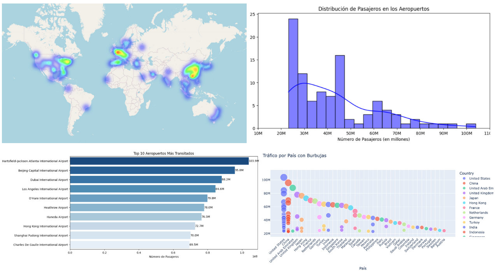

01 / Python · Análisis exploratorio
Una mirada al tráfico
aéreo mundial.
Exploración de los 100 aeropuertos más transitados: distribución de pasajeros, comparación por país y visualización geográfica.
Un recorrido que combina análisis exploratorio y distintas formas de comunicar el comportamiento del tráfico aéreo.
Explorar análisis y código ↗